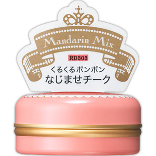
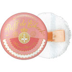

返回列表
产品名称：マジョリカ マジョルカ パフ・デ・チーク（フラワーハーモニー） マンダリンミックス

資生堂 マジョリカ マジョルカ パフ・デ・チーク（フラワーハーモニー） マンダリンミックス ＲＤ３０３
メーカー 資生堂
JANコード 4901872679225
商品の特徴
くるくるポンポン なじませチーク
成分・分量
-
用法及び用量
＜使用方法＞
パフで大きく円を描くようにとり、ほおの高いところを中心にパフでポンポンとぼかします。